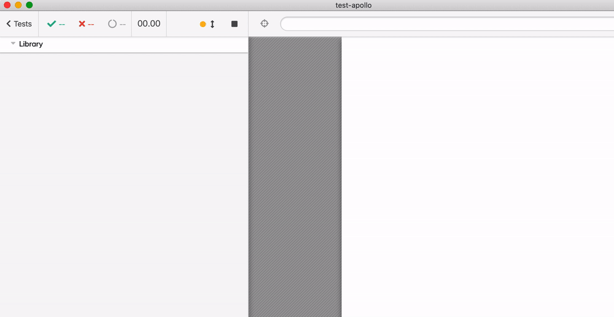

- Example application
- The Goal
- Adding tests
- Code coverage
- Component test
- Styles
- Testing the interface
- GraphQL example
- Components all the way down
- Benefits
- Examples
- Future plans
- Thank you
I have been talking about framework-specific component testing for ages now. I have even coded a bunch of adaptors like cypress-react-unit-test, cypress-vue-unit-test and others, that allow mounting individual components into Cypress and run them as full-fledged mini-web applications. While the initial solution was technically ok, due to the way Cypress works it has a long list of issues: React Hooks do not work, styles are often lost, etc.
I am excited to say that we have an experimental support for a new way of binding test code in Cypress v4.5.0 that seems to solve all known problems. In this blog post I will show how it might work, once we release it.
Example application
I will take a nice Todo application from blog post How To Build a React To-Do App with React Hooks as the starting point. You can see this application yourself at its original https://codesandbox.io/s/oj3qm2zq06 URL.

I have downloaded the code from the sandbox to my repo https://github.com/bahmutov/react-todo-with-hooks; it has a CSS file and two JS files - very compact example.
1 | /repo |
The application is bundled and served using react-scripts which is often used to serve modern React applications.
1 | { |
The Goal
I have noticed that the application allows us to mark Todo items as completed, but it never allows to "undo" completing an item. Once the task is done, there is no way to get it back to the initial incomplete state.

I would like to change "complete" an item into "toggle" an item. But I don't know the code of the application, so it is dangerous to simply start hacking. We need tests first; and we want to make sure we test the entire application before changing its behavior.
Adding tests
1 | npm i -D cypress |
Our first full end-to-end test goes through a typical user story.
1 | /// <reference types="cypress" /> |
The test runs and passes

Code coverage
Did we test all code paths in our application? The simplest way for us to find out is to measure how much of the application's code was executed by running this one e2e test. We can follow the Cypress Code Coverage Guide to set up coverage reporting.
- Instrument the application's code while running. For any application that uses
react-scriptswe can use module cypress-io/instrument-cra to do so on the fly.
1 | npm i -D @cypress/instrument-cra |
When we start the application, we preload this module first - and we will have application's code instrumented.
1 | { |
- We need to add @cypress/code-coverage to Cypress to merge coverage from tests and save report
1 | npm i -D @cypress/code-coverage |
This plugin should be loaded from the support and plugins files
1 | import '@cypress/code-coverage/support' |
1 | module.exports = (on, config) => { |
Start Cypress again and run the test. You see "Saving coverage from ..." and "Coverage report" messages at the end of the run.

In the folder coverage you will find the report in several formats, let's open the static HTML one
1 | open coverage/lcov-report/index.html |
Our single end-to-end test was very effective at covering almost all lines of the application.

We can drill down into individual file coverage.

Component test
The line we missed is inside TodoForm component, and it is kind of hard to confirm its behavior. We can easily write an end-to-end test that tries to "enter" empty input.
1 | cy.get('input').type('{enter}') |
BUT it does not confirm the property addTodo is not called at all. We really want to test the component, not the entire application.
Let's write a component test.
- Install cypress-react-unit-test v4+
1 | npm i -D cypress-react-unit-test |
- In
cypress.jsonenable experimental Cypress feature
1 | { |
While end-to-end tests reside by default in cypress/integration folder, let's place component tests right alongside the source code in src folder. We will filter the spec files using "testFiles": "**/*spec.js" parameter.
- Load
cypress-react-unit-testfrom the support and plugins files
1 | require('cypress-react-unit-test/support') |
1 | module.exports = (on, config) => { |
Unlike end-to-end tests, the component specs must be bundled the same way as the application code is. Thus we have added multiple plugins helpers that find and use the bundling options your application is using. In this case, Cypress will find the Webpack config from react-scripts module and will use it.
Let's write component test!
1 | import React from "react" |
The component test directly imports TodoForm from the application code and mounts it using mount method from the cypress-react-unit-test. Once the component is mounted, it runs as a "mini" web application. We can use normal Cypress commands against it! Think of mount as cy.visit for components.

You can see the component run inside Cypress iframe (where a regular web application usually runs during end-to-end test). You can interact with the component, inspect it using DevTools, see how it behaves using time-traveling debugger - all Cypress benefits apply both to end-to-end tests and to component tests. Plus code coverage is included by default!
Styles
When mounting a component, you might want to apply additional styles to make it look the same as in real application. The mount command options let you specify inline style, CSS filename or external stylesheets. For example, here is the Todo component test.
1 | import {Todo} from "./App" |

The buttons looks "normal", but the entire component still does not look the same - because our styles come from src/App.css and require certain DOM structure. Let's recreate the structure and load additional CSS file in our test.
1 | it('renders with styles', () => { |

Looks good.
Testing the interface
As I argued before - a component test is just a unit test where props are inputs and side effects like DOM, network calls, etc are outputs. Let's confirm that Todo component calls the removeTodo prop when the user clicks "Remove" button.
1 | it('deletes an item', () => { |

GraphQL example
Notice how we directly passed a stub into the component as a property - because the component "lives" right inside the spec. By having direct access to the component, you can do amazing things - like combine mock and live GraphQL calls, see bahmutov/test-apollo
1 | import React from 'react' |

Components all the way down
Component testing can work with components of any size. We have tested TodoForm and Todo components, let's test the top-level App component.
1 | import React from "react" |
The test runs and looks ... almost like the complete application!

Component testing gives you a flexibility over the scope of the code you want to test. In addition to testing your application as a whole via end-to-end tests you can test a subset of the application "tree". If your application has the top level authentication that is hard to bypass from an end-to-end test - you can test the component that sits right under the authentication provider.
Finally, while we are testing components, let's test a few functions using unit tests. While this was always possible in Cypress, component testing mounting mode makes it much closer to testing the real code, because bundling the component spec is done using your application's settings.
1 | import App, {toggleOneTodo} from "./App" |
From the smallest units of code to the largest components - you control the scale of what you want to test.
Benefits
In my completely biased personal opinion, Cypress component testing using the real browser has many advantages
| Feature | Cypress + cypress-X-unit-test |
|---|---|
| Test runs in real browser | ✅ |
| Cross-platform | Chrome / Firefox / Microsoft Edge |
| Uses full mount | ✅ |
| Test speed | as fast as the app works in the browser |
| Test can use additional plugins | use any Cypress plugin |
| Test can interact with component | use any Cypress command |
| Debugging | use browser DevTools, Cypress time-traveling debugger |
| Re-run tests on file or test change | ✅ |
| Test output on CI | terminal, screenshots, videos |
| Tests can be run in parallel | ✅ via parallelization |
| Test against interface | ✅ and can use @testing-library/cypress |
| Spying and mocking | Sinon library |
| Code coverage | ✅ |
| Visual testing | ✅ via visual plugins |
Examples
We have forked a number of 3rd party projects to confirm component testing works.
| Repo | Description |
|---|---|
| try-cra-with-unit-test | Hello world initialized with CRAv3 |
| try-cra-app-typescript | Hello world initialized with CRAv3 --typescript |
| react-todo-with-hooks | Modern web application using hooks |
| test-redux-examples | Example apps copies from official Redux repo and tested as components |
| test-react-hooks-animations | Testing React springs fun blob animation |
| test-mdx-example | Example testing MDX components using Cypress |
| test-apollo | Component testing an application that uses Apollo GraphQL library |
| test-xstate-react | XState component testing using Cypress |
| test-react-router-v5 | A few tests of React Router v5 |
| test-material-ui | Testing Material UI components: date pickers, lists, autocomplete |
| test-d3-react-gauge | Testing React D3 gauges |
| storybook-code-coverage | Example app where we get 100% code coverage easily with a single integration spec and a few component specs, replacing several tools |
| react-loading-skeleton | One to one Storybook tests for React skeleton components. Uses local .babelrc settings without Webpack config |
| test-swr | Component test for Zeit SWR hooks for remote data fetching |
To find more examples, see GitHub topic cypress-react-unit-test-example
Future plans
We have already released new versions of cypress-react-unit-test and cypress-vue-unit-test and plan to upgrade other framework adaptors (Angular, Svelte, etc) to be compatible with experimentalComponentTesting: true mode.
Thank you
Special thank you 👏 to Dmitriy Kovalenko @dmtrKovalenko for making Cypress Test Runner and React adaptor work through these PRs #5923 and #108. They have removed the technical limitations that prevented React Hooks, component styles and other features from working correctly inside the component tests.
Another big shout out goes to Jessica Sachs @_JessicaSachs for working on component testing support in cypress-vue-unit-test 👏.